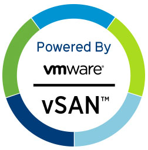

| |
Déployez votre solution hyperconvergée (HCI) avec VMware vSANJe peux vous accompagner dans la conception, le déploiement et la gestion efficace de votre infrastructure de stockage virtualisée avec VMware vSAN. |
| |
Déployez votre solution hyperconvergée (HCI) avec VMware vSANJe peux vous accompagner dans la conception, le déploiement et la gestion efficace de votre infrastructure de stockage virtualisée avec VMware vSAN. |

Choix de l'InfrastructureJe vous aide à choisir la meilleure configuration, en fonction de vos besoins et de vos contraintes. Vous pouvez opter pour des Ready Nodes, des serveurs certifiés par VMware, prêts à l’emploi où il ne reste que la configuration de vSAN à effectuer. Alternativement, si vous disposez de serveurs existants, je vous aide à les préparer en installant ESXi et en configurant intégralement votre cluster vSAN |

Conception et DéploiementJe vous accompagne dans la conception de votre solution HCI en vous aidant à choisir entre une architecture OSA ou ESA selon vos objectifs et contraintes. Ensemble, nous déterminons le type de stockage le mieux adapté, qu'il soit hybride ou full flash, ainsi que la configuration idéale : Standard, Cluster étendu (Stretched Cluster) ou Cluster à deux nœuds (2-Node Cluster) |

Configuration et OptimisationPour une exploitation optimale des fonctionnalités avancées de vSAN, je vous aide à configurer différentes stratégies de stockage (Storage Policies) pour protéger vos VMs en fonction de vos besoins spécifiques, la compression et la déduplication pour optimiser l’espace de stockage, le cryptage du datastore ou du trafic réseau, afin de sécuriser vos données sensibles. |

MigrationsJe vous accompagne dans la migration de vos données depuis une plateforme classique vers une infrastructure VMware vSAN HCI. En analysant votre environnement actuel et planifier chaque étape de la migration, en minimisant les interruptions de service. |
Le choix de VMware vSAN représente une décision stratégique pour les entreprises cherchant à moderniser leur infrastructure de stockage et à améliorer la performance de leurs environnements virtualisés. vSAN permet de virtualiser le stockage de manière intégrée à vSphere, simplifiant ainsi la gestion et la configuration tout en offrant une évolutivité et une résilience accrues. Grâce à sa capacité à consolider les ressources de stockage, vSAN optimise les coûts et améliore l'efficacité opérationnelle.